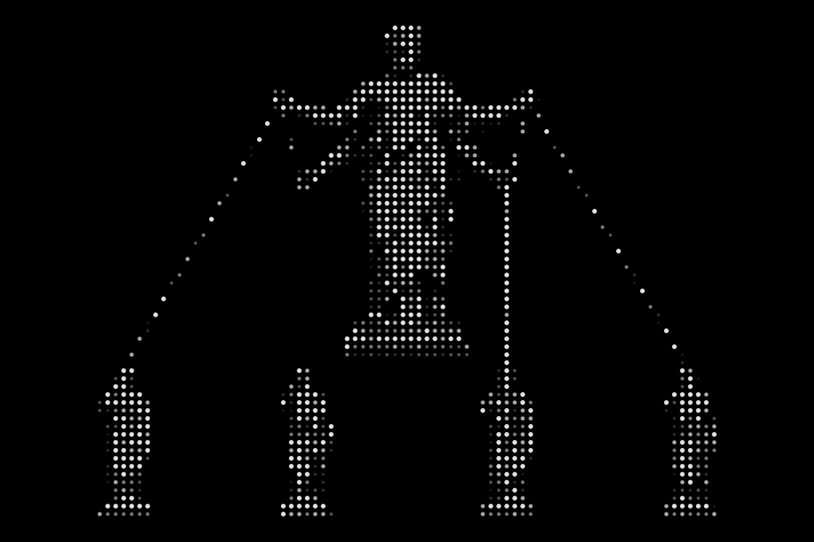
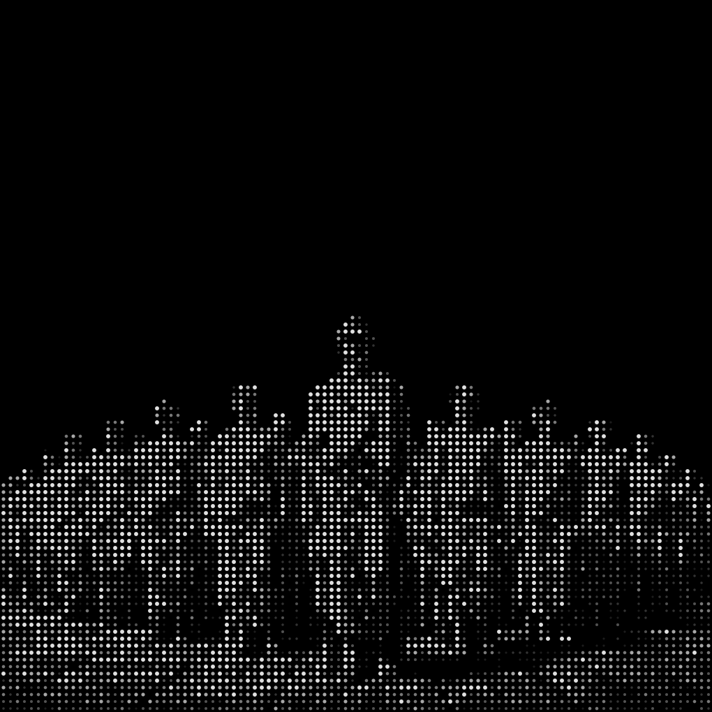

01/Remember
Persistent memory
It recalls before it acts and commits what the judge certifies. Scored 88.0% against mem0-OSS at 66.6% on 778 held-out LoCoMo questions.
Harness, orchestration and workforce declared in one file.
01/Remember
It recalls before it acts and commits what the judge certifies. Scored 88.0% against mem0-OSS at 66.6% on 778 held-out LoCoMo questions.
02/Delegate

The lead and its members are declared in TypeScript. The roster is a type, so the wrong assignee fails at compile or at the gate.
03/Survive
Work lives on a board under a lease. When the worker holding a task dies, the lease expires and the next tick picks it up.
04/Judge
Returned work meets the company rubric criterion by criterion, and a failing criterion becomes the next attempt's feedback.
05/Govern
A tool the agent was not granted is refused by name, with alternatives. Budgets reserve against the cap before an attempt is admitted.
06/Choose
Our harness is one line of config, which makes it one line to leave. Both runtimes reach the same primitives and the same governance.
Honesty
Most of this runs on staging. Hosting is gated, learning outcome is unmeasured, and Claude Code is not hosted. The Lab page carries the full caveats.
Read the research →